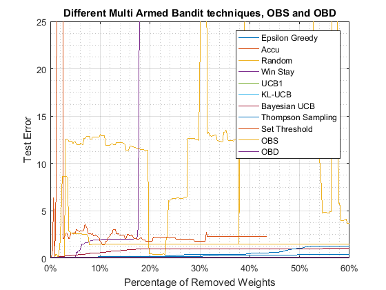

Contents
clear all;
clc;
close all;
Compute the accuracy of the model
load('modelEvaluation.mat');
[Yhat,E,NSSE_te2] = nneval(NetDef,W1,W2,PHI2,Y2,1);
fprintf('Test Error : %d\n',NSSE_te2);
[row,col] = size(W1);
sizeDim = row * (col - 1);
sizee= sizeDim * 0.60;
vecAcc = ones(sizee,1) * NSSE_te2;
AccM = vecAcc';
load('AccuracyOfOBS_OBD.mat');
Test Error : 8.418842e-02
Load OBS accuracy
chk=length(Accobsprune)
if chk>sizee
Accobsprune=Accobsprune(1:sizee);
xs=[1:sizee];
else
xs=[1:length(Accobsprune)];
end
timeruning(1)=obstime;
chk =
481
Load OBD accuracy
chk=length(Accobdprune)
if chk>sizee
Accobdprune=Accobdprune(1:sizee);
xd=[1:sizee];
else
xd=[1:length(Accobdprune)];
end
timeruning(2)=obdtime;
chk =
500
Run Random
ARN=RN(sizeDim);
chk=length(ARN)
if chk>sizee
ARN=ARN(1:sizee);
x0=[1:sizee];
else
x0=[1:length(ARN)];
end
Test Error : 8.418842e-02
chk =
460
Run Decay Epsilon Greedy
[AEG,AccRWDEG, egtime]=EG();
chk=length(AEG)
if chk>sizee
AEG=AEG(1:sizee);
x1=[1:sizee];
else
x1=[1:length(AEG)];
end
timeruning(3)=egtime;
Test Error : 8.418842e-02
egtime =
3.9905
chk =
423
Run Win-stay Shift-Left
[AWS,AccRWDWS, WStime]=WS();
chk=length(AWS)
if chk>sizee
AWS=AWS(1:sizee);
x3=[1:sizee];
else
x3=[1:length(AWS)];
end
timeruning(4)=WStime;
Test Error : 8.418842e-02
WStime =
4.1274
chk =
84
Run UCB1
[AUCBDraw,AccRWDUCB1, UCB1Stime]=UCBDraw();
chk=length(AUCBDraw)
if chk>sizee
AUCBDraw=AUCBDraw(1:sizee);
x4=[1:sizee];
else
x4=[1:length(AUCBDraw)];
end
timeruning(5)=UCB1Stime;
Test Error : 8.418842e-02
UCB1Stime =
4.0116
chk =
453
Run Thompson Sampling
[ATSDrawing,AccRWDTS, TStime]=TSDrawing();
chk=length(ATSDrawing)
if chk>sizee
ATSDrawing=ATSDrawing(1:sizee);
x5=[1:sizee];
else
x5=[1:length(ATSDrawing)];
end
timeruning(6)=TStime;
TStime =
4.8994
chk =
453
Run Bayseian UCB
[ABYSUCB,AccRWDBYSUCB, BUCBtime]=BYSUCB();
chk=length(ABYSUCB)
if chk>sizee
ABYSUCB=ABYSUCB(1:sizee);
x6=[1:sizee];
else
x6=[1:length(ABYSUCB)];
end
timeruning(7)=BUCBtime;
Test Error : 8.418842e-02
BUCBtime =
15.4711
chk =
453
Run KL-UCB
[AKLSUCB,AccRWDKLSUCB, KLUCBtime]=KLSUCB();
chk=length(AKLSUCB)
if chk>sizee
AKLSUCB=AKLSUCB(1:sizee);
x7=[1:sizee];
else
x7=[1:length(AKLSUCB)];
end
timeruning(8)=KLUCBtime;
Test Error : 8.418842e-02
KLUCBtime =
11.7739
chk =
453
Run Rmove weight under threshold 0.1 x i (i =1 to the maximun)
[AccThreshold, Thresholdtime]=Threshold();
v = length(AccThreshold)
if v>sizee
AccThreshold=AccThreshold(1:sizee);
x8=[1:sizee];
else
x8=[1:length(AccThreshold)];
end
[AEG(1),ARN(1),AWS(1),AUCBDraw(1),AKLSUCB(1),ABYSUCB(1),ATSDrawing(1),AccThreshold(1),Accobsprune(1),Accobdprune(1)]=deal(AccM(1));
Test Error : 8.418842e-02
Ttime =
0.0781
v =
200
figure;
plot(x1/sizeDim*100,AEG,'DisplayName','Epsilon Greedy');
hold on
plot(x0/sizeDim*100,AccM,'DisplayName','Accu');
plot(x0/sizeDim*100,ARN,'DisplayName','Random');
plot(x3/sizeDim*100,AWS,'DisplayName','Win Stay');
plot(x4/sizeDim*100,(AUCBDraw),'DisplayName','UCB1');
plot(x7/sizeDim*100,(AKLSUCB),'DisplayName','KL-UCB');
plot(x6/sizeDim*100,(ABYSUCB),'DisplayName','Bayesian UCB');
plot(x5/sizeDim*100,ATSDrawing,'DisplayName','Thompson Sampling');
plot(x8/sizeDim*100,AccThreshold,'DisplayName','Set Threshold');
plot(xs/sizeDim*100,Accobsprune,'DisplayName','OBS');
plot(xd/sizeDim*100,Accobdprune,'DisplayName','OBD');
hold off
grid on;
grid minor;
title('Different Multi Armed Bandit techniques, OBS and OBD');
yt = get(gca, 'xtick');
ytl = strcat(strtrim(cellstr(num2str(yt'))), '%');
set(gca, 'xticklabel', ytl);
xlabel('Percentage of Removed Weights');
ylim([0 25])
ylabel('Test Error');
legend('show');

plot the running time for each algorithm
figure;
bar(timeruning)
set(gca,'xtick',1:8,'xticklabel',{'OBS','OBD','EG','WS','UCB1','TS','BUCB','KLUCB', 'Threshold'})
grid on;
grid minor;
title('Time of running different pruning algorithms');
xlabel('Name of the Algorithm');
ylabel('Runing time in second');
Plot the best models
figure;
plot(x4/sizeDim*100,(AUCBDraw),'DisplayName','UCB1');
hold on
plot(x0/sizeDim*100,AccM,'b--o', 'DisplayName','Accu');
plot(x5/sizeDim*100,ATSDrawing, 'DisplayName','Thompson Sampling');
plot(xs/sizeDim*100,Accobsprune, 'DisplayName','OBS');
plot(xd/sizeDim*100,Accobdprune, 'DisplayName','OBD');
hold off
grid on;
grid minor;
title('Different Multi Armed Bandit techniques, OBS and OBD');
yt = get(gca, 'xtick');
ytl = strcat(strtrim(cellstr(num2str(yt'))), '%');
set(gca, 'xticklabel', ytl);
xlabel('Percentage of Removed Weights');
ylabel('Test Error');
legend('show');
save('DrawAllData');